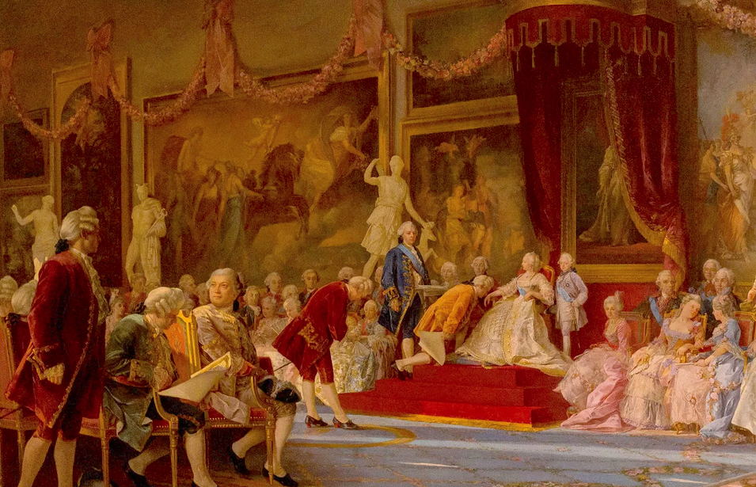
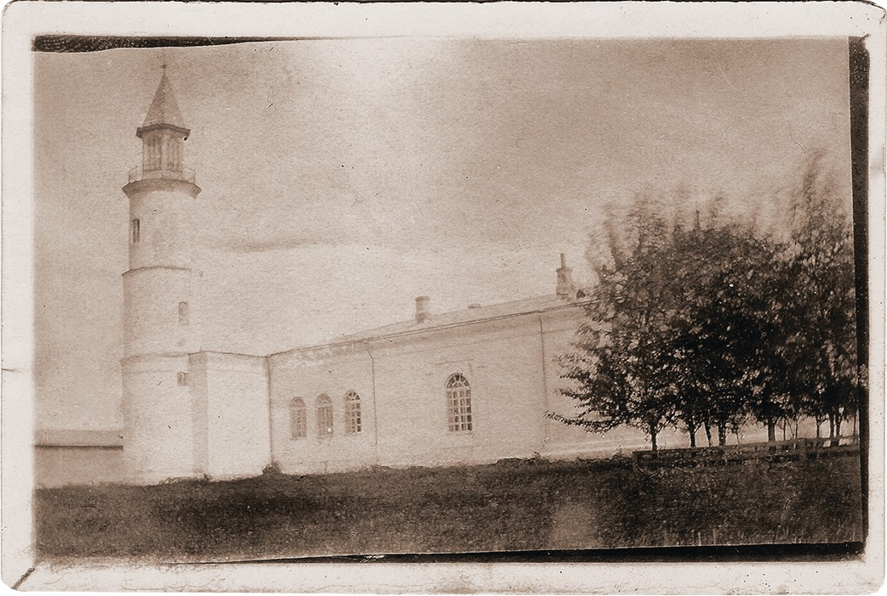
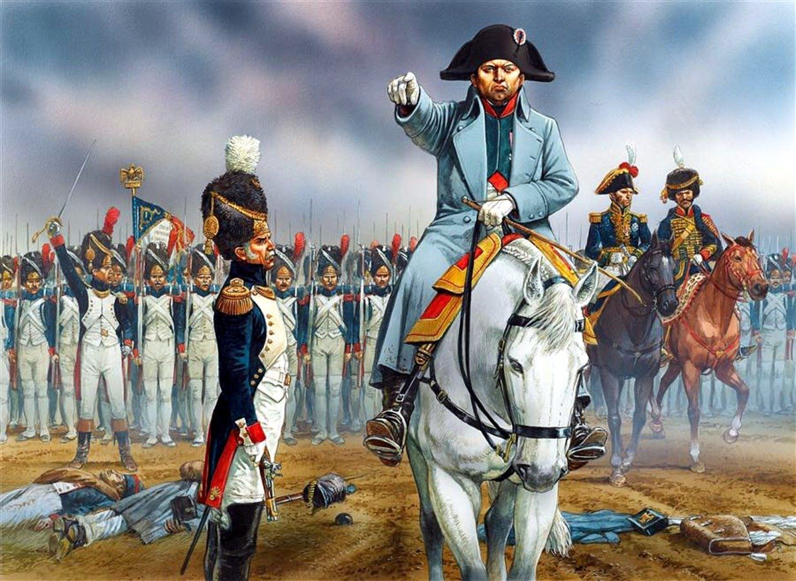
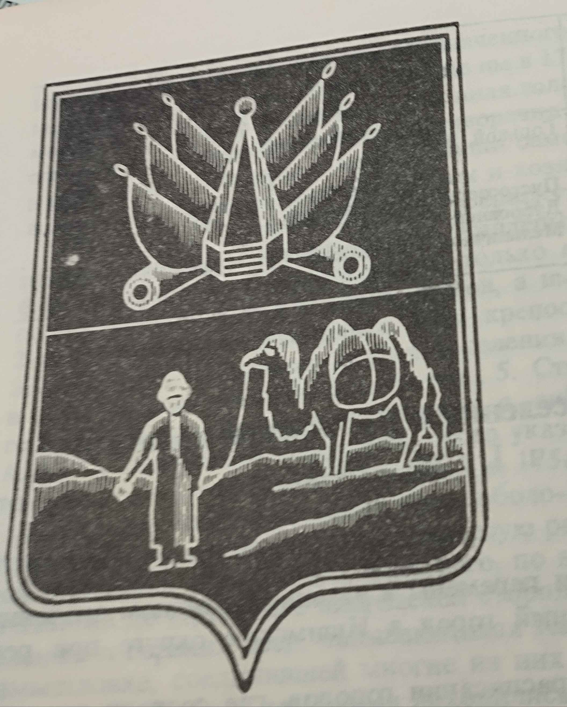
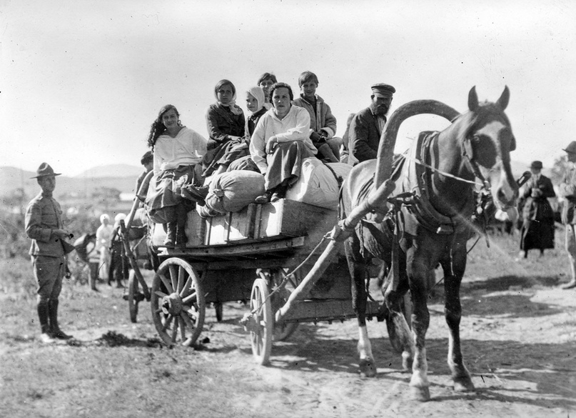

Сводка по датам
Сводка по годам (нажми на меня)
- Предыстория: Легенда о возникновении
- 1740: Идеи о возведении новой линии укреплений
- 26 марта 1752: Указ о создании новой линии укреплений
- Июнь 1752: Экспедиция и начало строительства
- 1753 - 1759: Продвижение и сложности в строительстве
- 1772 - 1784: Связь с другими городами, и окончание стройки
- Торговля - путь развития города
- 1807: Из оборонительной крепости в полноценный город
- 1812: Помощь Отечеству
- 1815 - 1842: Появление Герба
- Множество бедствий
- 1871 - 1897: Промышленное развитие города
- 1897: Влияние переселения на развитие города
- Общая историческая хроника Петропавловска
- Итог дореволюционного Петропавловска
- Тест: проверка знаний
Предыстория: легенда о возникновении
1740: Идеи о возведении новой линии укреплений

Она шла от реки Тобол через Царево Городище (ныне город Курган), Коркину Слободу (ныне город Ишим) до Чернолуцкого острога на Иртыше (севернее Омска на 50 километров). Ишимская линия была слишком извилистой и растянутой. Протяженность ее составляла 985 верст (1 верста = 1066,8 метров).
Встал вопрос о выпрямлении и переносе Ишимской линии на юг с целью сокращения ее протяженности между реками Тоболом и Иртышом. С 1743 по 1745 годы инженерами и геодезистами производились изыскания новой линии. Было составлено и направлено в Сенат два проекта. Один из них принадлежал поручику Шишкову и майору Сташкееву. Этот проект предусматривал спрямить линию и вести её вдоль цепи пресных и горько-соленых озер.
Подполковник Кутузов возражал против такого варианта, мотивируя это недостатком пресной воды и неудобством местности для поселения. Он представил свой проект, в котором предполагал провести новую линию вблизи большой Сибирской дороги, соединяющей сибирские остроги. Сенат отправил оба проекта на рассмотрение губернатора А. М. Сухарева и командира Сибирского корпуса генерал-майора Киндермана. Последний отверг проект Кутузова, как не достигавший цели сокращение линин.
Киндерман поддерживал проект спрямления линии, так как укрепления надежно защищали Тобольскую губернию от возможных набегов. В результате русские границы отодвигались к югу на 50-200 верст от старой Ишимской линии и сокращались почти вдвое. Сенат одобрил проект, представленный Киндерманом.
26 марта 1752: Указ о создании новой линии укреплений
26 марта 1752 года последовал указ Сената:
«Хотя и были посланы для съемки на линию капитан Новоселов, подполковник Кутузов и майор
Сташкеев, но Вы, генерал-майор Киндерман, нашли ее кривой, и после своего проезда сами назначили
линию, то и построить на ней к лучшему защищению Сибирской стороны от набегов Киргиз-Кайсацких и
для обуздания тех орд, кочующих к Сибирской стороне, от их своевольностей, и чтоб оный народ
содержан был в подданической должности, от Омской крепости до урочища Звериной Головы.
1 -
Две шестиугольных крепости, де- вять четырехугольных, 33 редута, 42 маяка.
2 - Нарядить из
таможних войск 1290 человек регулярного, 2352 нерегулярного, всего 3642 человек, которым лю- дям
те крепости строить без заплаты из казны Ея Императорского Величества заработанных денег.
3 -
Инструменты, заготовленные на Екатеринбургских заводах, и железо отправлять на Новую линию
заблаговременно.
4 - Для прикрытия работ от набегов Киргизов выставить на Новую линию 1 из
Сибирских армейских полков.
5 - Озаботиться о снабжении Новой линии провиантом.
6 - Для
заготовления провианта на месте, согласно представлению Киндермана, заселить новые места
поселянами из охотников обывателей Сибирских городов, также отставных солдат, драгун и казаков,
в каждую по 50, в редут по 20 человек. Однако в таком случае поступать обще с согласия с
Сибирским Губернатором Сухаревым, весьма с осмотрением, чтобы из того принужденного переселения
(кроме охотников), народу не могло последовать крайнего изнеможения и убытка, и для того
переселять из вышеупомянутых одних желающих».
Июнь 1752: Экспедиция и начало строительства
Выстроенная линия укреплений получила
название Ново-Ишимской. Она соединила Оренбургскую линию на западе и Иртышскую — на востоке. В
народе линию называли «Горькой», очевидно, из-за множества горько-соленых озер, разбросанных
вдоль всей трассы. На всем протяжении линии не хватало пресной воды. Офицеры, находившиеся в
крепостях, жаловались руководителю строительных работ Крафту на недостаток пресной воды.
6
июля 1752 года в урочище Кызыл-Жар - Красный Яр (получившего это название от красноватого,
высокого и отвесного берега Ишима) на 160 верст южнее старой (Ишимской) линии прибыла экспедиция
из почти 2 тысяч человек и заложили главную крепость Новой линии - крепость святого Петра,
позднее названную Петропавловской.
Место, выбранное для крепости, в стратегическом отношении
оказалось удачным. Два крутых оврага, ограничивающих строительную площадку выходили к Ишиму и
вместе с обрывистым берегом реки создавали естественную преграду возможному неприятелю. Больших
работ по строительству укреплений требовала лишь степная сторона. Располагавшийся недалеко от
будущего укрепления густой березняк можно было использовать для строительства. Излучина Ишима,
высокий обрыв, неоглядные дали, голубые блюдца озер и синеющие на горизонте колки создавали
впечатляющую картину. Начальником строительства был назначен поручник Трейблут.
Они начали
строить крепость Святого Петра, а также малые крепости Полуденную и Лебяжью с 8 редутами.
Основное укрепление было шестиугольником площадью около 2-х гектаров.По углам его на равном
расстоянии располагались бастионы, соединённые между собой крутинами.Общая длина крепостной
ограды составляла более 1,3 км. В бастионах размещались пушки, внутри крепости — казармы,
конюшни, офицерские дома, гарнизонная церковь, пороховой погреб и др. помещения.
Тяжёлые
работы изнуряли солдат и казаков, также плохое питание и ранние холода. Люди болели, многие
умирали, участились побеги. зимой приходится оттаивать снег, чтобы поить лошадей. От плохой
воды, от зловонных испарений высыхающих болот и озер болели люди, гибли лошади.
Казахское
население относилось к строительству положительно, стремясь установить дружеские отношения с
русскими.
На месте старой крепости сейчас стоит завод «Изолит», а от самой крепости осталось только пара полуразрушенных зданий.
{kind=link}
1753 - 1759: Продвижение и сложности в строительстве
Зимой строительство было приостановлено из-за
суровых условий.
Весной 1753 г. строительство возобновилось. Необходимость в хлебе и фураже
способствовала заселению крестьянами земель вокруг крепости. Солдаты тоже имели право строить
собственные дома вне крепости. Самым удобным местом для этого было Подгорье.
Постепенно
здесь, теснясь к реке, вырастали улицы. В целях безопасности предместье было обнесено оградой.
Въезд и выезд из него охранялся специальными караулами.
25 июня 1753 Крафт предписал, там,
где нет пресной воды, выкопать колодцы.
В 1759 г. в крепости открылась первая школа для
солдатских детей.
Как и другие укреплённые пункты в Сибири, крепость св. Петра и Павла
усиливалась в военном отношении: увеличивался гарнизон, деревянные стены и бастионы заменяли
земляными. Перестроены казармы, сооружён «посольный дом» для приёма представителей Кокандского
ханства.
Также по указанию Сената для работ использовались колодники (заключенные), сосланные
в Сибирь на каторгу
1772 - 1784: Связь с другими городами, и окончание стройки

Окончательно Петропавловская крепость
была отстроена к концу 70-х годов XVIII века. В крепости жил командующий линией и находился
штаб одного из двух полков, стоявших на линии. Кроме регулярных войск здесь стояла казачья
часть. Гарнизон крепости в 1771 году состоял из одной пехотной и двух драгунских рот,
численность его не превышала 350 человек. Войска Новой линии подчинялись командиру
Сибирского корпуса, штаб которого находился в Омске.
В 1772 г. при крепости было уже два
предместья: нагорная часть и подгорье. Росло купеческое сословие, так как крепость
становилась крупным политическим и экономическим центром Приишимья. Здесь сходились торговые
пути из России и Средней Азии.
Для сообщения жителей с левобережьем Ишима в 1781 г. на
месте паромной переправы был построен мост.
В 1784 г. началось строительство мечети.
Торговля - путь развития города
22 декабря 1759 года последовал
Высочайший указ об открытии в крепости св. Петра торга со степными народами. Исполняя указ,
командир Сибирского корпуса писал батыру Кульсаре: «Во удовольствие вашего киргис-кайсацкого
народа в крепости св. Петра велено учредить сатовку, для чего... и русским купцам в ту
крепость с товарами, мукой и крупой съезжаться велено». Было предложено Кульсаре оповестить
казахов, чтобы «они со скотом в Петропавловскую крепость приезжали без всякого
опасения».
Торговля развивалась довольно интенсивно.
Этому способствовало удобное
географическое расположение крепости - на пересечении караванных путей из России в Западную
Сибирь, в центральные районы Казахстана и Среднюю Азию. В силу этих обстоятельств крепость
вскоре сделалась главным пунктом меновой торговли с Хивой, Бухарой и Ташкентом. Торговая
площадь находилась внизу, «под пушками этой крепости». Здесь в два ряда располагались лавки
русских купцов. Площадь была обнесена рогатками. Когда к ней подходил степной караван, здесь
выставляли воинский караул, а в крепости били в барабан.
На зов барабана сходились
торговые люди. Они выкладывали свои товары. После этих приготовлений на площадь пропускались
торговцы из степи со своим скотом. Они пригоняли больше всего лошадей, быков и широкохвостых
баранов. Кроме того, привозили овчины, мерлушки, меха. Всё это обменивали на железные котлы,
вертела, сукна, шелковые ткани, платки, позументы, иглы, бисер.
Торг этот для российского
купечества был весьма выгоден. Выменянных лошадей русские купцы продавали в драгунские
команды. Степную лошадь на линии можно было купить за 15 рублей, а самую лучшую - за 25. По
штатной же цене того времени на каждую драгунскую строевую лошадь отпускалось по 50 рублей,
на артиллерийскую по 30 и на подъемную по 15 рублей.
Не обмененный в первый день скот
киргизцы (так в прошлом называли казахов) оставляли на ночь пастись недалеко от торговой
площади. Среднеазиатские купцы привозили сухие фрукты, изюм, киш миш, урюк, цитварное семя,
полушелковые ткани, мерлушку, мягкую рухлядь в обмен на полуситцы, плис, миткаль, юфть,
сукна, кожевенные изделия, медные и железные вещи, посуду, сундуки.
Об интенсивности
поступления в Петропавловскую крепость киргизских товаров, свидетельствует тот факт, что в
60-х годах в течение летнего сезона сюда приезжали торговать в среднем от 500 до 650
киргизов.
Русские купцы, кроме внутренней оптовой торговли, отправляли свои караваны в
киргизскую степь, Коканд, Бухару и Хиву. Торговля с киргизами, особенно в степи,
осуществлялась меною. Общей единицей при размене зачастую являлся баран. Русские товары
поступали в Петропавловскую крепость от купцов из Тобольска, Тюмени, Тары, Казани, Тулы,
Курска и Архангельска. Ходовым товаром в обмене с казахами были цветные сукна, которые
преимущественно выменивались на лошадей.
И. И. Завалишин говорил: "Меновой двор в
Петропавловске необыкновенно оживлён в весеннюю пору..."
В конце ХІХ века в
Петропавловске два раза в год устраивались месячные ярмарки: Петровская — с 25 ию- ня по 25
июля и Андреевская - с 20 ноября по 20 декабря. На Петровской ярмарке сбывались
преимущественно: холст, крестьянские изделия, конопля, пакля, коровье масло, экипажи
воткинских и кыштымских за- водов, колеса, косы, посуда, гончарные изделия и частично
мануфактурный товар, а на Андреевской - мануфактурный, галантерейный, меховой и жировой
товары, железные изделия, венская мебель, зеркала, иконы, мясо, битая птица.
1807: Из оборонительной крепости в полноценный город
В 1807 году крепость поменяла статус – стала городом. Назвали ее Петропавловском в честь христианских святых апостолов Петра и Павла. Выгодное географическое положение сделало Петропавловск одним из крупных торговых центров. Согласно архивным документам, «в 1777 году в крепости св. Петра выменяно степных товаров больше, чем в Усть-Каменогорской, Семипалатинской, Ямышевской и Омской крепостях, вместе взятых». Свидетельство большого торгового прошлого города – огромное количество краснокнижных купеческих особняков и магазинов, которые Петропавловск сохранил. Сейчас они являются архитектурными памятниками.
{kind=link}
1812: Помощь Отечеству

Сохраняя своё военно-стратегическое значение, город
превратился в центр торгово-экономических связей и духовных контактов казахского и русского
народа.
Во время войны с Наполеоном горожане и крестьяне дважды отправляли рекрутов и
добровольно пожертвовали на защиту Отечества около 30 тыс. руб.
1815 - 1842: Появление Герба

В 1815 г. построена Покровская церковь.
Герб
Петропавловска утвержден 7 сентября 1842 года (законом №16351): В верхней половине щита герб
Тобольский. В нижней «в серебряном поле на горе верблюд, навьюченный двумя тюками наперевес
и ведомый за веревку азиатцем».
Множество бедствий
С 1849 года началось интенсивное строительство на горе. Одной из причин этого явился большой пожар. В первое время Подгорье (Старый город - казачья станица) часто подвергалось пожарам. Кроме того, жители нижнего форштадта терпели бедствия от весенних разливов Ишима. Особенно сильные наводнения были отмечены в 1824 и 1847 годах. Три наиболее сильных пожара совершились в 1837, 1849 и 1861 годах периодически через 12 лет. Так, весной 1849 года сильный огонь охватил подгорную и нагорную части. Всего сгорело 435 домов, гостиный двор и 106 лавок со всеми товарами. Купеческое и мещанское общество приняли решение о распланировании города на нагорной части, где уже в 1829 году был выстроен каменный лазарет. Сюда был перенесен гостиный двор, на площади вы- строили здание городской полиции (ныне помещается здесь горсоюзпечать). Интересно отметить, как вырос и изменился состав населения за период с 1835 по 1851 гг:
1871-1897
Промышленность города, возникшая на переработке
сельскохозяйственного сырья, развивалась и укрупнялась. Увеличивался капитал местных
промышленников и купцов.
В результате в 1871 году в Петропавловске был открыт городской
общественный банк, а в 1881 году появилось отделение государственного банка. Позже были
открыты отделения Сибирского торгового и Русского торгово-промышленного банков.
В 1873
году Петропавловск получил телеграфную связь с городом Ишимом, а в 1878 году с Кокчетавом,
Атбасаром и Акмолинском.
Более быстрый рост Петропавловска начался после того, как
через него прошла Транссибирская железнодорожная магистраль. Около половины двенадцатого 11
июля 1894 года в Петропавловск пришел первый поезд, платформы которого были загружены
шпалами и рельсами. Петропавловск стал крупной станцией на этой дороге. Главными грузами
отправления были хлеб и продукты животноводства. С постройкой железной дороги в казахскую
степь интенсивно устремился русский и иностранный капитал. В Петропавловске обосновались
представители и филиалы столичных и иностранных торгово-промышленных фирм и банков. На
переработке местного сельскохозяйственного сырья складывалась промышленность. Увеличилось
количество кожевенных, салотопенных, овчинных, клееваренных и мыловаренных заводов.
Старейший из них - кожевенный завод братьев Зенковых, основанный в 1834 году.
1897: Влияние переселения на развитие города

Переселение крестьян из Европейской России и
строительство Сибирской железной дороги способствовало развитию города.
Маслоделательное
производство Петропавловска поставляло масло в Петербург, Москву, Ригу, Ревель, Одессу,
Самару, Владивосток, а также в Англию, Германию и Данию. Крупными были кожевенный завод
братьев Зенковых, завод по переработке кишок швейцарца Акколы. По переписи 1897 г. в
Петропавловске проживало — 19 688 человек. Основную массу составляли русские, казахов
насчитывалось около 1500 чел. Значительную группу составляли татары-переселенцы.
Историческая хроника Петропавловска
1752: Заложена крепость св. Петра и строится новая линия крепостей, соединившая Иртышскую линию с Оренбургской.
1759: 22 декабря. Высочайший указ об открытии в крепости св. Петра торга со степными народами.
1771: В форштадте при крепости св. Петра было 172 двора и 914 жителей - городовых казаков, татар, киргиз и бухарцев.
1795: С соизволения императрицы Екатерины II в форштадте крепости св. Петра выстроена киргизом Касимовым первая в киргизской степи каменная мечеть (под горой).
1803: Указ Правительствующего Сената от 24 октября, где говорится, что «форштадты в крепостях должны оставаться в управлении комендантов и полиция в их никакой другой зависимости на другого начальства иметь не должна. К сему роду управления должно причислить и те города, где число обывателей так мало, что гарнизон и крепость составляют в них самую главную часть и где дома обывателей должны быть признаваемы форштадтом». Таким форштадтом при крепости св. Петра был в 1803 году нынешний город Петропавловск.
1804: Для заведования форштадтом крепости св. Петра назначен частный земский комиссар.
1806: Учрежден в крепости св. Петра особый пограничный суд для разбора взаимных жалоб киргиз и русских.
1807 : 7 сентября. Назначен первый городничий в крепость св. Петра (отставной майор Левашов с окладом 300 рублей в год).
1807 : 8 ноября. Высочайшим указом установлен следующий размер капиталов: купцы 1-й гильдии от 50 тыс. и более, 2-й гильдии от 20 тыс. и 3-й — от 8 тыс. рублей.
1808: 26 мая. Высочайшим указом дозволено всем российским подданным всякого состояния покупать и выменивать киргизских детей.
1819: На меновом дворе при крепости св. Петра выменено у киргиз скота разного рода 69 679 голов.
1822: 22 июля. При преобразовании Сибири Петропавловск назначен окружным городом вновь образованной Омской области, причем Петропавловск объявлен окружным городом.
1825: Запрещено покупать киргиз, калмыков и др. азиатцев,но для пополнения недостатка женщин в Западной Сибири разрешено выменивать у сопредельных с нею кочевников детей женского пола.
1825: Организовано Городское Хозяйственное Управление в Петропавловске по типу городов малолюдных.
1825: Построены каменные казармы на берегу реки Ишима.
1829: Выстроен каменный военный лазарет.
1831: Открыто Духовное Правление (закрытое затем в 1866 году).
1836: 11 ноября. В расписании крепостей и укрепленных мест на классы крепость св. Петра отнесена к третьеклассным.
1837: 23 декабря. Решением купеческого и мещанского обществ отклонено предложение Министерства внутренних дел об устройстве в Петропавловске городской больницы и постановлено: «не угодно ли будет таковую лечебницу оставит впредь до достаточных к тому способов». Бюджет Петропавловска в 1837 году был: приход 16 542 рубля 90,5 коп. расход 7514 рублей.
1838: 16 апреля. При упразднении Омской области Петропавловск присоединен к Ишимскому округу Тобольской губернии в качестве заштатного безуездного города с 1 января 1839 го да, каковым он и оставался до 1 января 1869 года.
1841: Упразднено в Петропавловске комендантство.
1842: 19 декабря. Утвержден герб Петропавловска. Изображение его следующее: щит разделен на две половины; в верхней герб Тобольской губернии, а в нижней в серебряное поле на горе верблюд, навьюченный двумя тюками. Верблюда ведет за веревку азиатец.
1844: Открыто мужское приходское училище.
1849: 25 июня. Приговор купеческого и мещанского общества о новом распланировании города на горе и о постройке нового гостиного двора (после пожара 11 мая 1849 года)
1852: 26 октября. Повелено закрыть в Петропавловске Городское Хозяйственное Управление и учредить Ратушу, которая и была открыта 1 января 1853 года.
1854: 15 июля. Указом Тобольского губернского правления разрешено определить на два города (Ишим и Петропавловск) одного городского архитектора с жалованием из городских сумм обоих городов 342 рубля 85 коп., из которых на долю Петропавловска приходилось 159 рублей 28 коп.
1858: 5 июня. Конфирмован план города Петропавловска.
1860: Перенесено в Петропавловск Главное управление Сибирского таможенного округа.
1860: 22 декабря. Повелено разрешить участок городской земли в Петропавловске (по нынешнему Вознесенскому пр.) обратить под устройство сада исключительно для магометан. «Вход воспрещен» — гласит и поныне вывеска над этим мусульманским кладбищем, очутившимся в центре города.
1862: 28 июня. Конфирмован новый план города Петропавловска.
1864: Открыто женское приходское училище.
1865: Выстроен каменный тюремный замок.
1866: 3 июня. Приказом военного министра № 187 учреждена Петропавловская местная команда.
1866: Закрыто Духовное Правление.
1868: Закрыта пограничная таможня.
1868: 4 ноября. При образовании Акмолинской области заштатный город Тобольской губернии Петропавловск сделан уездным городом вновь образованного Петропавловского уезда с 1 января 1869 года.
1871: Приходское женское училище преобразовано в женскую прогимназию.
1871: 16 марта. Открыт городской общественный банк.
1872: Введено городовое положение 1870 года.
1873: Проведен телеграф от Петропавловска до города Ишима.
1878: Проведен телеграф на города Кокчетав, Атбасар и Акмолинск.
1881: Открыто отделение государственного банка.
С 1913 года в Петропавловске Акмолинской области издается ежедневная политико-экономическая, общественно-литературная прогрессивная газета «Приишимье». Газета обслуживает интересы Сибири, Степного края и прилегающих к Петропавловску Ишимского и Тобольского районов.
Итог дореволюционного Петропавловска
Петропавловск стал играть роль культурного центра.
Здесь происходило сближение русского и казахского народов. Одними из первых в нем были
открыты гарнизонная школа (1765 год), школа с интернатом для казахских детей, а к 1913 году
в городе уже имелись: семиклассное реальное училище, в котором обучалось 214 учащихся,
женская гимназия на 460 мест, мужская торговая школа, 5- и 4-классные городские учили- ща,
две церковно-приходские школы, два приходских училища (мужское и женское), две станичные
школы (мужская и женская), две железнодорожные школы (мужская и женская) и мусульманские
школы. В городе были 2 гостиницы, коммерческий клуб, городской театр, два кинематографа,
общественная блок городская больница с родильным приютом, лечебница при переселенческом
пункте, военный лазарет, уездная больница и городская богадельня при Всехсвятской церкви.
При этой же церкви была учреждена община-монастырь для женщин. Город освещался
керосино-калильными фонарями, была телеграфная связь, почта, водопровод.
Однако
дореволюционный Петропавловск являлся типичным городом купцов и скотопромышленников. В
облике его резко выделялись купеческо-чиновничий центр, застроенный кирпичными зданиями
магазинов, гостиниц, уездных учреждений, купеческих и чиновничьих особняков, с мощеным
Вознесенским проспектом, и убогие окраины - Рабочая и Солдатская слободки, поселок
железнодорожников, утопавшие в грязи, лишенные всякого благоустройства. план города Петропавловска 1916.
{kind=link}
Куда отправимся дальше?
История Петропавловска в 1900 - 2000
История огромна, две мировых войны и множество изменений в городе
ПогрузитьсяО текущей архитектуре и памятниках в Петропавловске
Архитектура уникальна, а памятники и по сей день стоят и символизируют прошлое Петропавловска
Исследовать